Antes de empezar. Las capturas son de una familia de ejemplo (Familia Soler). Los nombres y los datos son inventados.
Cómo leer este manual
Cada apartado explica una parte de la aplicación. Los botones se escriben así: Nueva. Los menús se escriben así: Más > Familia.
En el móvil, los adultos tienen cinco pestañas abajo: Panel, Validar, Tareas, Mesada y Más. Los hijos tienen Hoy, Progreso, Premios, Mi banco y Más.
1. Qué es DiploP
DiploP es una aplicación para toda la familia. Sirve para repartir las tareas de casa, ganar puntos y llevar la mesada con claridad.
Funciona en el móvil, como una aplicación más. No hace falta descargar nada de una tienda.
La idea en tres pasos
Tareas. Los adultos reparten las tareas y cada hijo ve las suyas.
Puntos. El hijo marca la tarea como hecha. Un adulto la valida y el hijo gana puntos.
Dinero, premios y pantalla. Los puntos se cambian por euros de mesada o por premios. Las tareas también pueden dar minutos de pantalla.
Quién puede hacer qué
Adulto
Hijo
Crear y editar tareas
Sí
No
Marcar una tarea como hecha
Sí (la da por hecha)
Solo las suyas
Validar tareas y dar puntos
Sí
No
Cerrar la semana y pagar la mesada
Sí
No
Pedir premios, dinero o minutos
No hace falta
Sí
Ver los datos de los demás
De todos los hijos
Solo los suyos
Importante. DiploP no mueve dinero de verdad. Tú entregas la mesada (en efectivo, por Bizum o transferencia) y la anotas en la aplicación. Así siempre sabéis cuánto se ha ganado y cuánto se ha pagado.
Pantalla de bienvenidaLo que ve un hijo
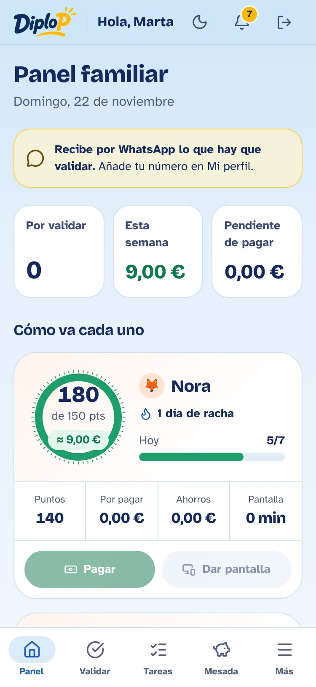
Lo que ve un adulto
2. Crear la familia y entrar
Crear la familia
La primera persona que entra crea la familia y se convierte en administradora.
Abre la dirección de la aplicación y pulsa Crear familia.
Escribe el nombre de la familia y tu nombre.
Elige un usuario (sin espacios) y un correo.
Pon una contraseña de 8 caracteres como mínimo.
El correo sirve para recuperar la contraseña si la olvidas.
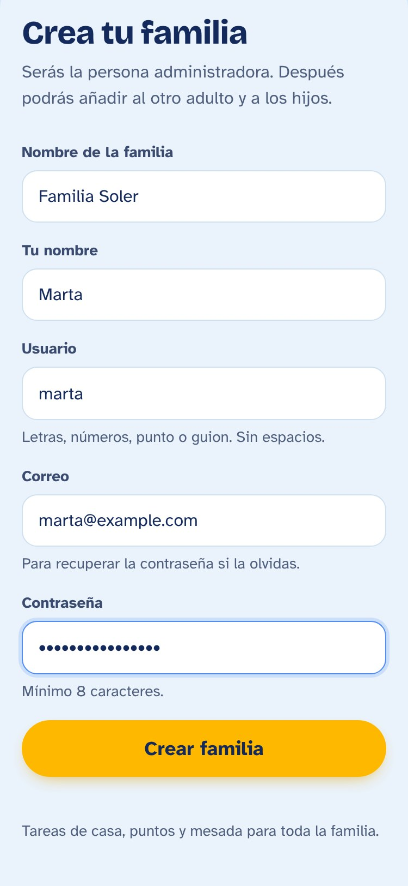
Crear la familia
Entrar cada día
Adultos: usuario y contraseña.
Hijos: usuario y PIN. Los hijos no necesitan correo.
En la pantalla de entrada, los hijos pulsan Soy hijo/a antes de escribir su PIN. La sesión se mantiene abierta unos 30 días en ese móvil.
Seguridad. Si alguien falla la contraseña o el PIN 5 veces seguidas, la cuenta se bloquea 15 minutos. Es una medida de seguridad. Si un adulto cambia el PIN de un hijo, la cuenta se desbloquea.
3. Añadir hijos y adultos
Entra en Más > Familia y pulsa Añadir.
Un hijo
Elige Hijo/a.
Escribe su nombre, un avatar y un color.
Pon un usuario y un PIN de 4 cifras como mínimo.
Desde el lápiz de cada persona puedes cambiar su nombre, su objetivo semanal de puntos, su PIN o su año de nacimiento. El año de nacimiento sirve para los avisos por WhatsApp (mira el apartado 12).
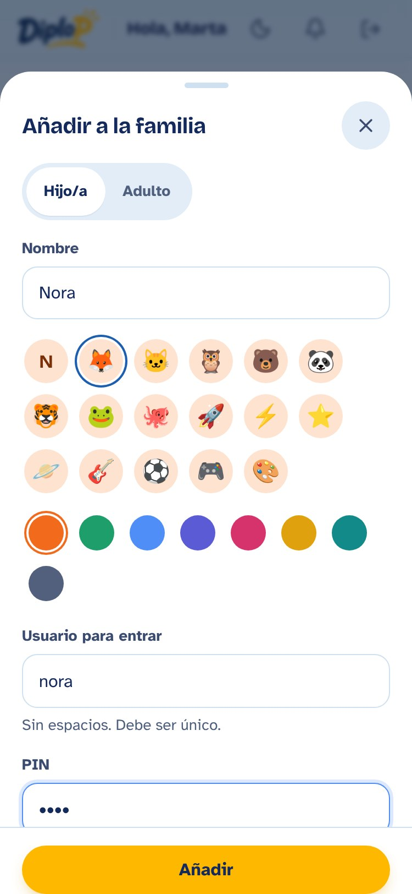
Añadir un hijo
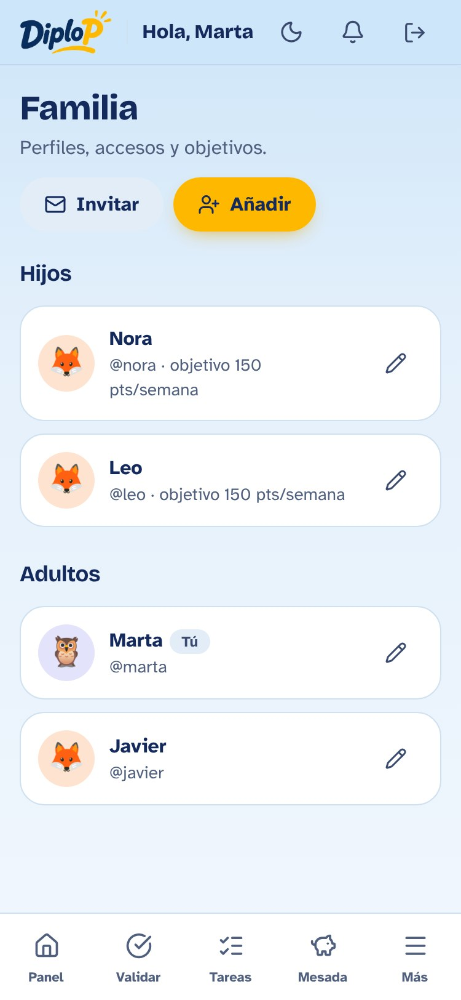
La familia lista
Otro adulto
Elige Adulto, escribe su nombre, su usuario y una contraseña. También puedes pulsar Invitar para enviarle un enlace por correo. El enlace vale 7 días y se usa una sola vez.
Los dos adultos pueden validar tareas, pagar y cambiar los ajustes.
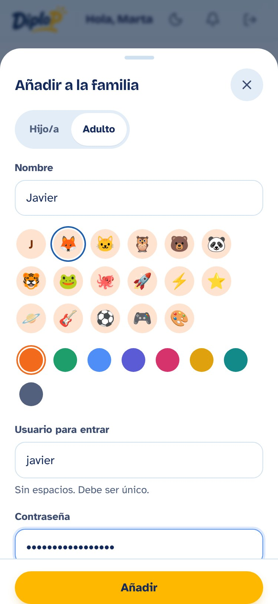
Añadir un adulto
4. Las tareas
Entra en Tareas y pulsa Nueva. Verás todas las tareas de la familia y una vista de calendario.
Una tarea fija
Elige un icono y escribe el nombre.
Elige la dificultad. Sugiere 10, 20 o 40 puntos, y los puedes cambiar.
Elige cuándo se repite: Una vez, Diaria, Semanal, Mensual o Cuando haga falta.
Elige a quién se asigna. Si son varios, puedes repartirla de forma individual (cada uno la suya), compartida (la primera persona que la hace se lleva los puntos) o por turnos.
Pulsa Crear tarea.
Nueva tarea
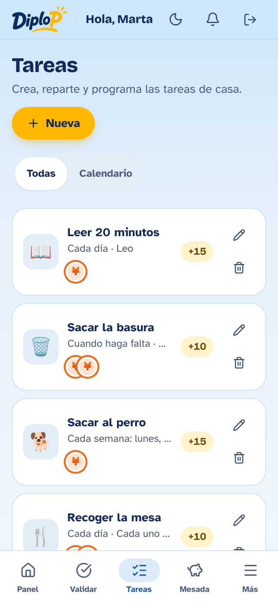
Lista de tareas
Opciones útiles
Necesita validación. Si lo activas, los puntos llegan cuando un adulto la aprueba. Si no, se suman al marcarla.
Pedir foto como prueba. Solo la ven los adultos de la familia.
La marca un adulto. El hijo no la reporta. Tú marcas «Cumplida» o «No cumplida». Sirve, por ejemplo, para «estar en el coche a la hora de salida».
«Cuando haga falta»
Para tareas sin día ni hora fijos, como sacar la basura. Está siempre disponible y se puede hacer una vez al día.
Si nadie la hace, no pasa nada: no cuenta como fallo ni rompe la racha.
Con varios hijos es compartida: la hace el primero y se lleva los puntos.
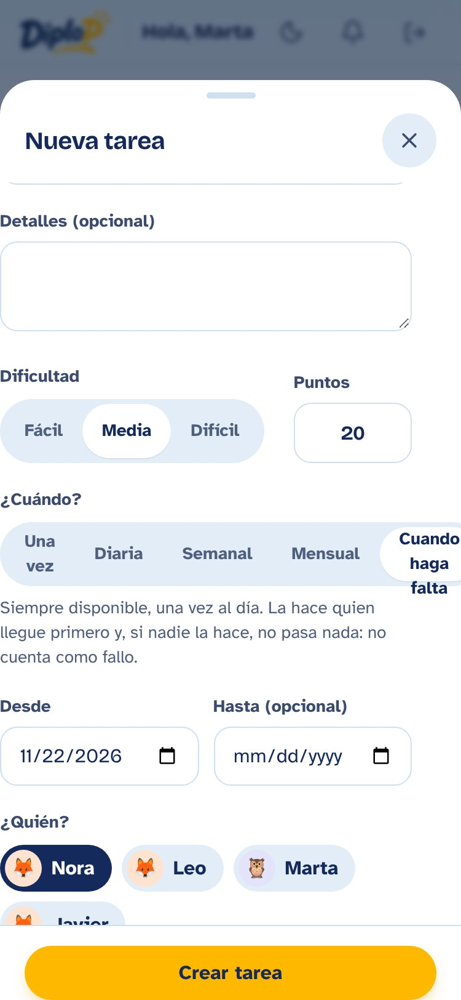
Cuando haga falta
Días de espera
En una tarea «Cuando haga falta» puedes poner «Después de hacerla, vuelve en N días». Mientras espera, el hijo la ve en gris con «Vuelve el jueves» y no la puede marcar.
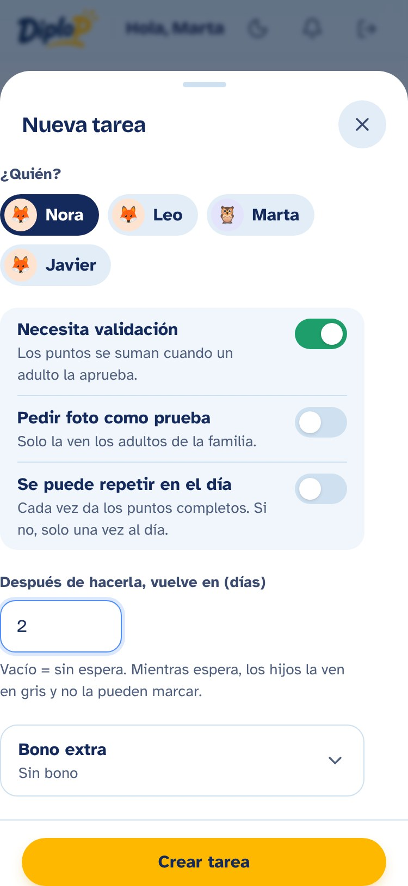
Días de espera
Días concretos de la semana
En una tarea Diaria o Semanal, elige los días en los que toca. Si dejas una diaria sin días marcados, toca todos los días. Los demás son días de descanso para esa tarea.
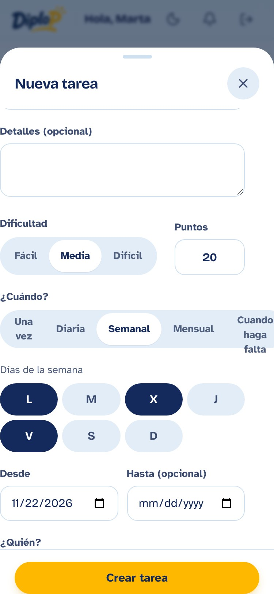
Días de la semana
Repetir en el mismo día
Activa «Se puede repetir en el día». Pon el máximo de veces (2, 3, 5…) o «sin límite». Cada vez da los puntos completos: dos paseos del perro de 10 puntos dan 20.
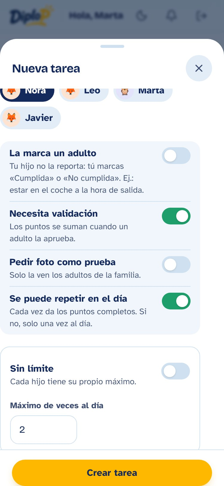
Repetir en el día
Horas límite y fin de semana
Algunas tareas valen más si se hacen a tiempo. Por ejemplo, tender la cama antes de las 9:00.
Pon dos horas: una de lunes a viernes y otra para el fin de semana y festivos.
Pasada la hora, la tarea vale un porcentaje de los puntos (50 %, 25 %, 0 %…).
Cuenta la hora en que el hijo pulsa «Hecha», aunque tú valides más tarde.
Hay plazo hasta las 23:59 con el valor de «tarde». Después la tarea caduca.
El hijo ve la cuenta atrás: «Antes de las 9:00 · quedan 25 min».
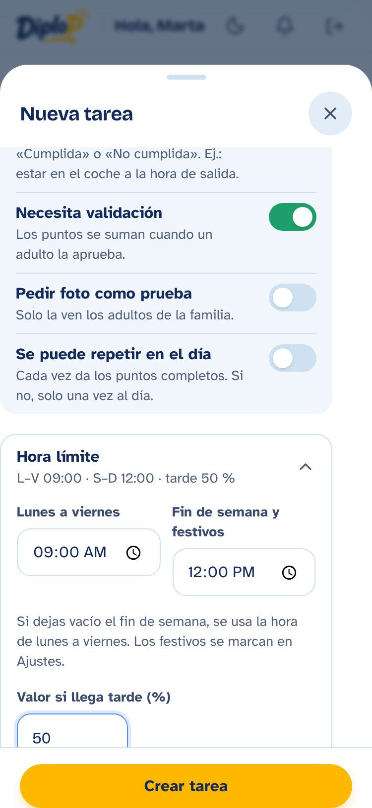
Hora límite
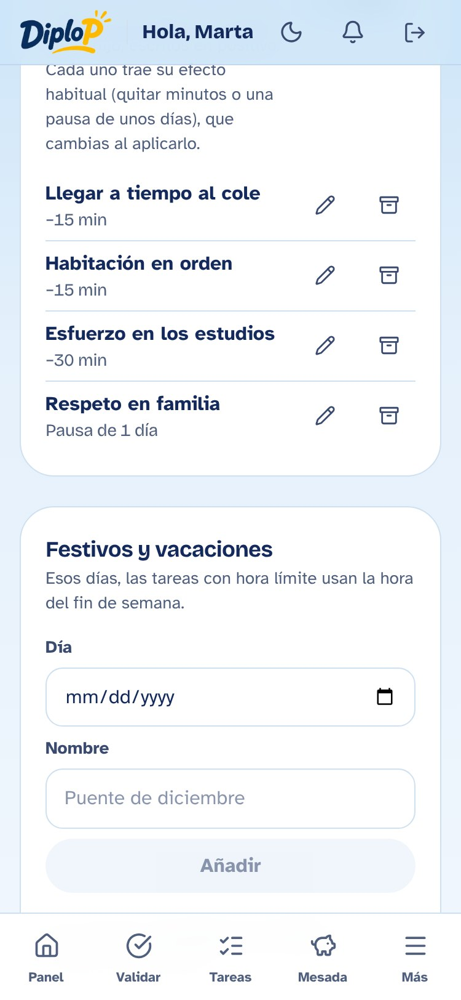
Festivos y vacaciones
Consejo. Los festivos y las vacaciones se marcan en Ajustes > Festivos y vacaciones. Esos días usan la hora del fin de semana.
Bono extra
Una tarea puede dar un bono además de los puntos: puntos extra, minutos de pantalla, un texto libre («helado el sábado») o un premio del catálogo.
El bono puede verse desde el principio o ser una sorpresa. La sorpresa se revela cuando apruebas la tarea y se gana una sola vez.
Puedes elegir que el bono se gane solo si llega a tiempo.
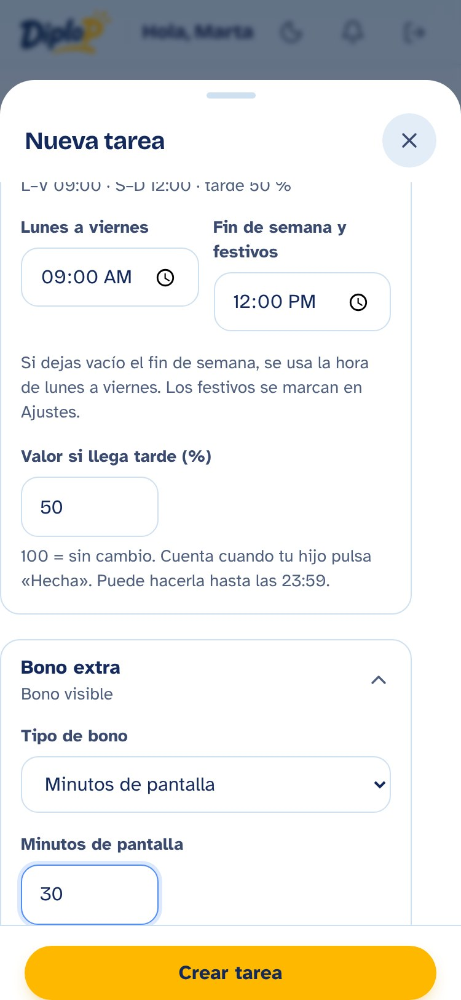
Bono extra
Trabajos extra
Para encargos ocasionales sin fecha: quitar hierbajos, limpiar el patio, ordenar el trastero…
En Más > Trabajos extra, crea el trabajo en el catálogo.
Cuando lo necesites, pulsa Activar. Puedes poner un plazo.
Sale en el tablón de los hijos. El primero que pulsa «Me la pido» se la queda.
Al validarlo, vuelve al catálogo para la próxima vez.
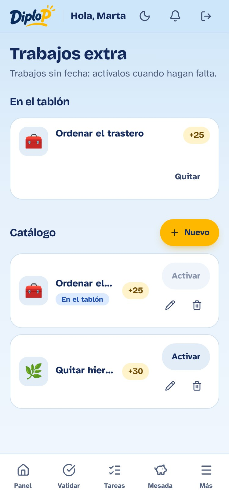
Trabajos extra
5. Validar: aceptar, parcial, devolver o rechazar
Cuando un hijo marca una tarea, te llega un aviso y aparece en Validar. Con el icono de la campana y el número rojo ves cuántas esperan.
Aprobar
Pulsa Aprobar. Los puntos se suman una sola vez. Antes de aprobar puedes cambiar los puntos con los botones − y +.
Si quieres otra cosa, pulsa Otras opciones.
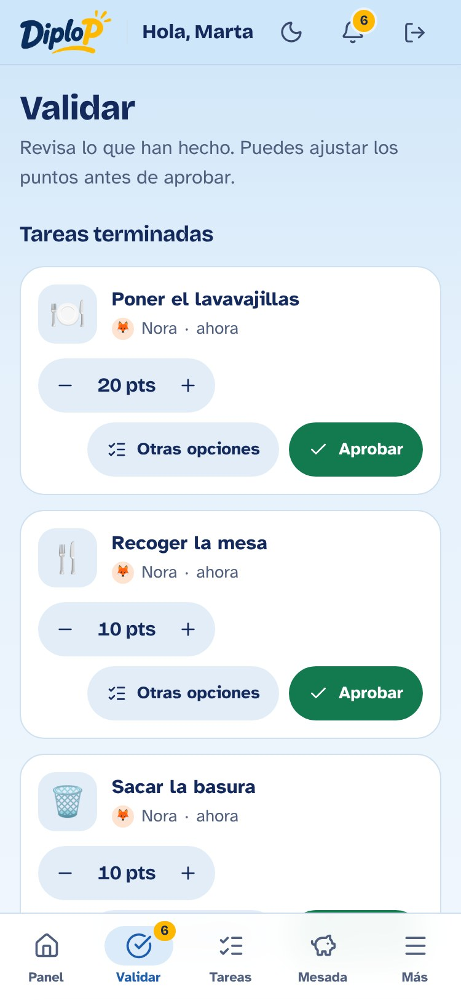
Lista para validar
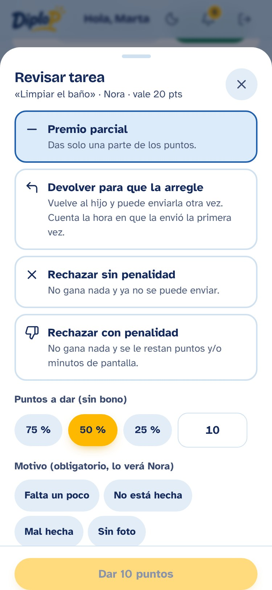
Otras opciones
Las otras opciones
Opción
Qué pasa
Premio parcial
Das solo una parte: 75 %, 50 %, 25 % o la cifra de puntos que escribas.
Devolver para que la arregle
La tarea vuelve al hijo y puede enviarla otra vez. Cuenta la hora en que la marcó la primera vez: si fue a tiempo, sigue a tiempo.
Rechazar sin penalidad
No gana nada y ya no puede volver a enviarla.
Rechazar con penalidad
No gana nada y se restan puntos y/o minutos de pantalla. Tú pones la cantidad. Por defecto se proponen los puntos de la tarea.
En todas estas opciones el motivo es obligatorio. Elige una frase rápida («Falta un poco», «No está hecha», «Mal hecha», «Sin foto») o escribe la tuya. El hijo lo ve.
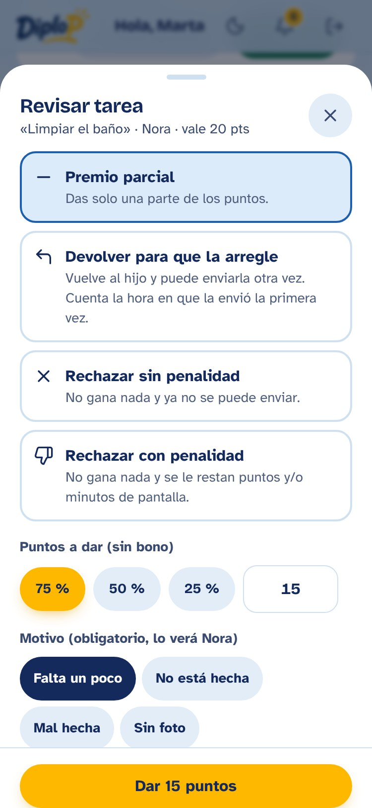
Premio parcial
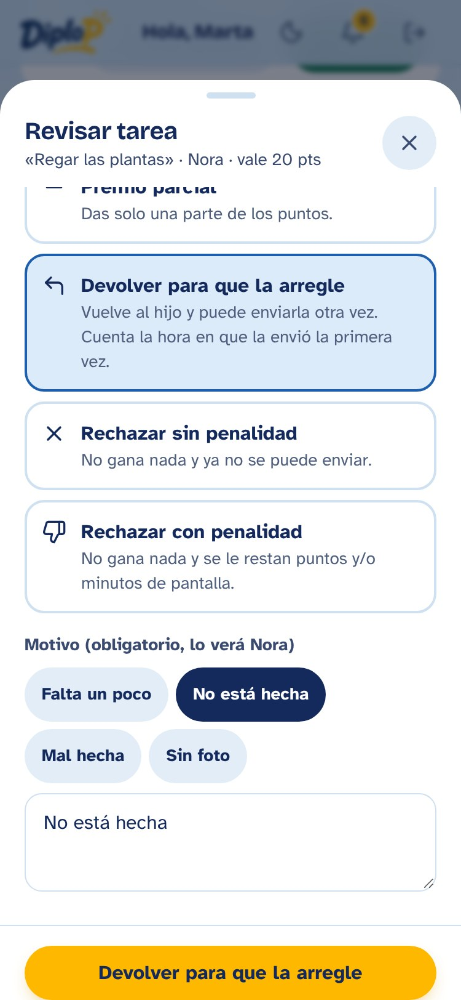
Devolver
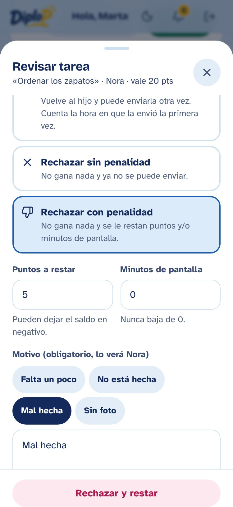
Rechazar con penalidad
Consejo. Empieza por devolver con una frase amable. Rechazar con penalidad es para casos serios.
6. Puntos, niveles, rachas y premios
Puntos y niveles
Cada tarea validada suma puntos. Los puntos ganados a lo largo de la vida suben el nivel del hijo: Novato, Aprendiz, Colaborador, Constante, Fiable, Experto, Crack, Maestro, Referente y Leyenda.
Rachas, objetivo e insignias
Racha: días seguidos con al menos una tarea hecha. Los días sin tareas asignadas no la rompen.
Objetivo semanal: cada hijo tiene una meta de puntos por semana, que se ve en el anillo.
Insignias: hay 10, por ejemplo la primera tarea, las 10 tareas o una racha de 7 días.
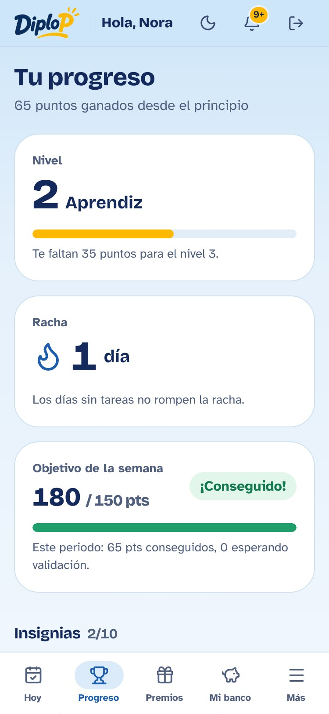
Progreso de un hijoPanel de los adultos
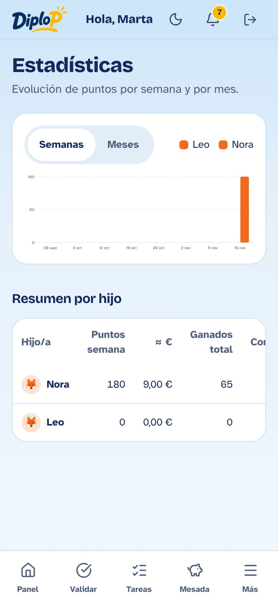
Estadísticas
La clasificación entre hermanos se puede desactivar en Ajustes.
Premios y canjes
En Más > Premios creas el catálogo: una peli, un helado, una noche de pizza… Cada premio cuesta unos puntos.
El hijo pulsa Canjear y confirma.
Los puntos se reservan al momento. No puede gastarlos dos veces.
Tú lo apruebas en Validar. Si lo rechazas, los puntos se devuelven.
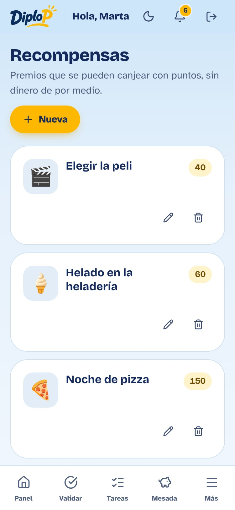
Catálogo de premios
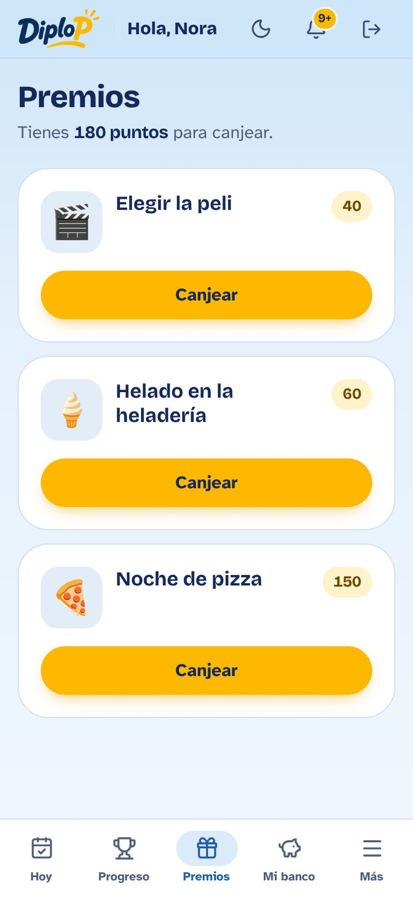
Premios del hijo
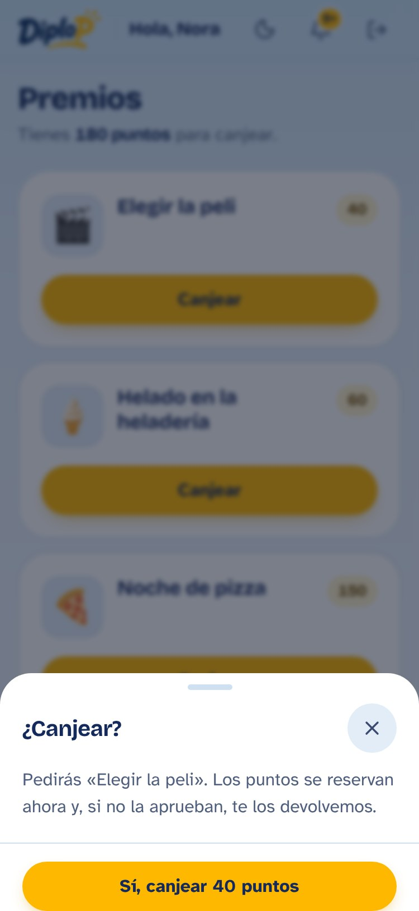
Confirmar el canje
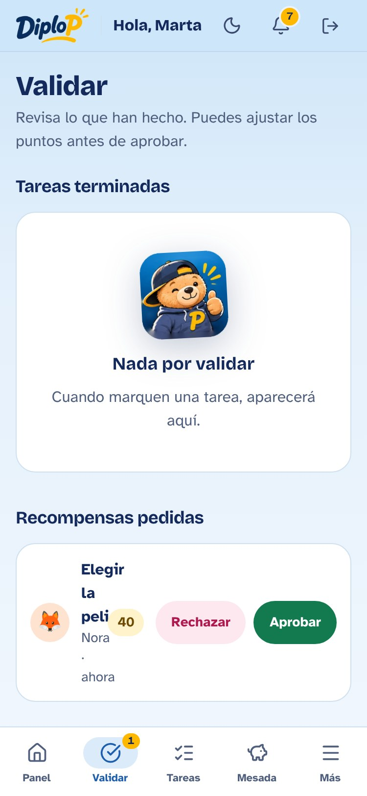
Aprobar el canje
7. Mesada y «Mi banco»
La mesada separa siempre tres cosas: los puntos ganados, los euros en que se convierten y lo que de verdad se ha pagado.
Cuánto vale un punto
En Ajustes eliges la equivalencia (por defecto, 100 puntos = 5 €). También eliges si cierras por semana o por mes y si hay un tope de euros por periodo. Con tope, lo que sobra se queda en puntos.
Cerrar la semana y pagar
En Mesada, pulsa Cerrar semana. Los puntos de cada hijo se convierten en euros.
En la tarjeta del hijo, pulsa Pagar. El importe ya viene puesto.
Elige la forma de pago (efectivo, transferencia, Bizum u otra) y confirma.
Sale un recibo y el hijo recibe el aviso.
Solo se puede cerrar una vez cada periodo por hijo. Repetir el cierre no duplica nada.
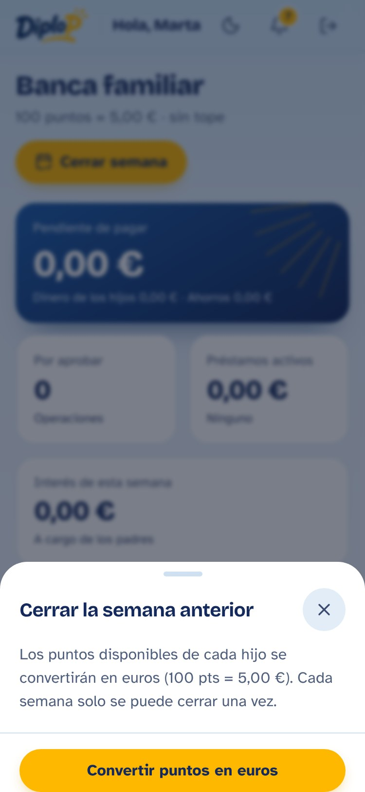
Cerrar la semana
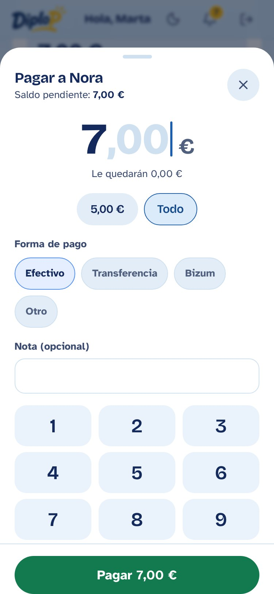
Pagar
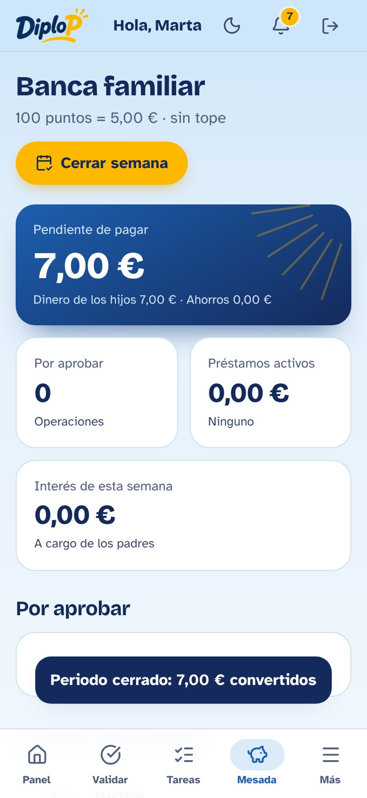
Dinero por pagar
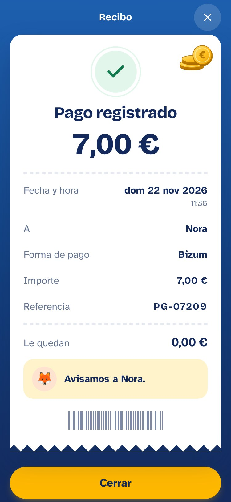
Recibo del pago
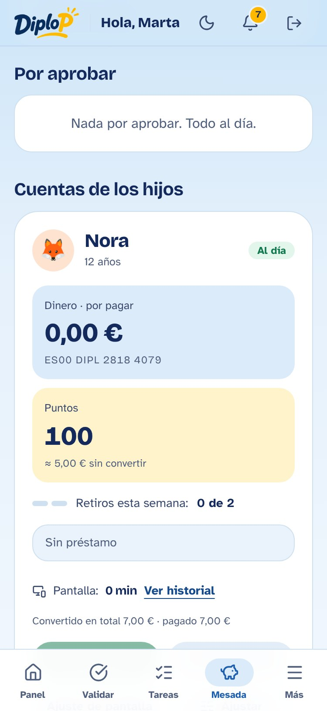
Banca familiar
Mi banco (lo que ve el hijo)
El hijo tiene una cuenta de dinero y una de puntos, con extracto. Desde ahí puede:
Canjear puntos por dinero cuando quiera (hay un mínimo que pones tú).
Retirar dinero: te llega un aviso y tú se lo entregas. Hasta 2 retiros por semana.
Adelanto: cambiar puntos por encima del tope de esta semana, a cuenta de la siguiente.
Préstamo: lo apruebas tú. Se devuelve en cuotas semanales con un pequeño interés en puntos.
Ahorrar: metas con interés semanal. Si saca el dinero antes de llegar, pierde el interés.
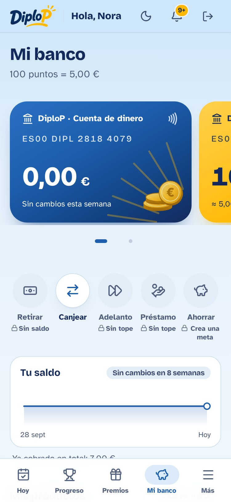
Mi banco
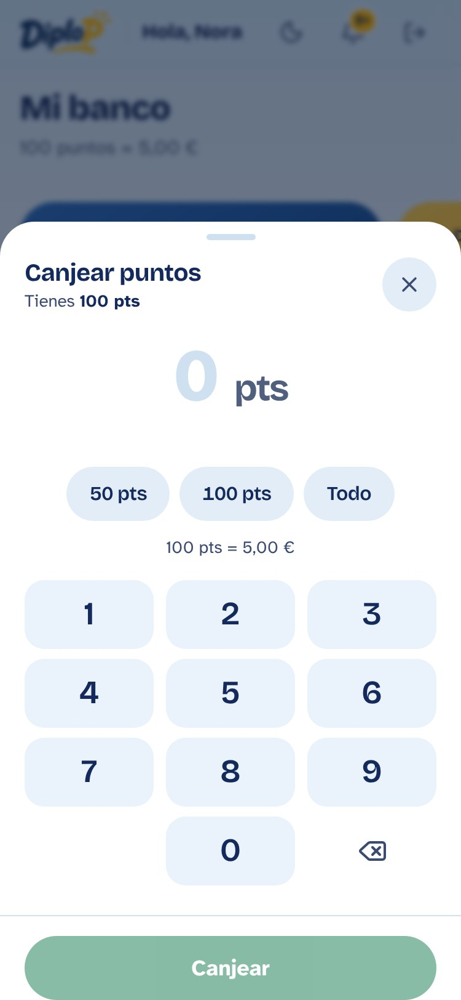
Canjear puntos
Consejo. En Ajustes puedes cambiar todos los números (retiros por semana, porcentajes, interés) o apagar cada opción que no quieras usar.
8. Tiempo de pantalla
Los minutos de pantalla tienen su propio saldo, aparte de los puntos. Un hijo los gasta (tele, tablet, videojuegos…) y los adultos los descuentan.
Plan semanal
En Ajustes > Plan semanal de pantalla pones los minutos de cada hijo (por ejemplo, 5 horas) y lo activas.
Se carga solo cada lunes a las 00:00.
Lo que no se usa caduca el lunes siguiente. Vale todo el fin de semana.
Puedes apagar el plan para un hijo.
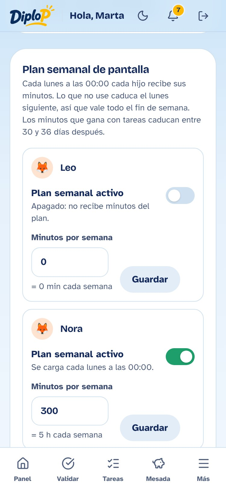
Plan semanal
Minutos ganados
Los minutos que gana con las tareas (bonos) caducan el primer lunes pasados 30 días. Al gastar, se descuenta primero lo que caduca antes: normalmente el plan de la semana y luego los ganados más antiguos.
El hijo ve el desglose de su saldo y cuándo caduca cada parte. Un hermano no puede verlo.
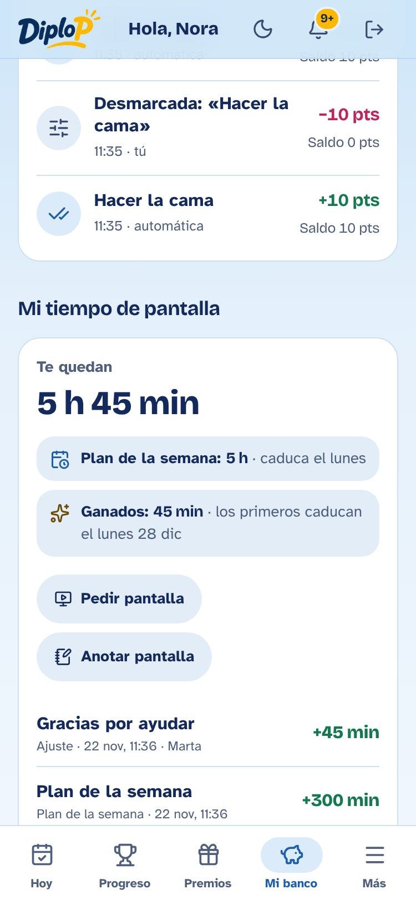
Saldo de pantalla
Ajustes de pantalla
Para quitar minutos o poner una pausa, usa Ajuste de pantalla en la cuenta del hijo. Los motivos están escritos en positivo, como lo que buscáis: «Llegar a tiempo al cole», «Habitación en orden», «Esfuerzo en los estudios», «Respeto en familia». Puedes crear más.
Elige Quitar minutos o Pausa de uno o varios días.
Cambia la cantidad si hace falta y añade una nota amable.
Puedes ofrecer una forma de recuperar: un trabajo extra que devuelve los minutos al hacerlo.
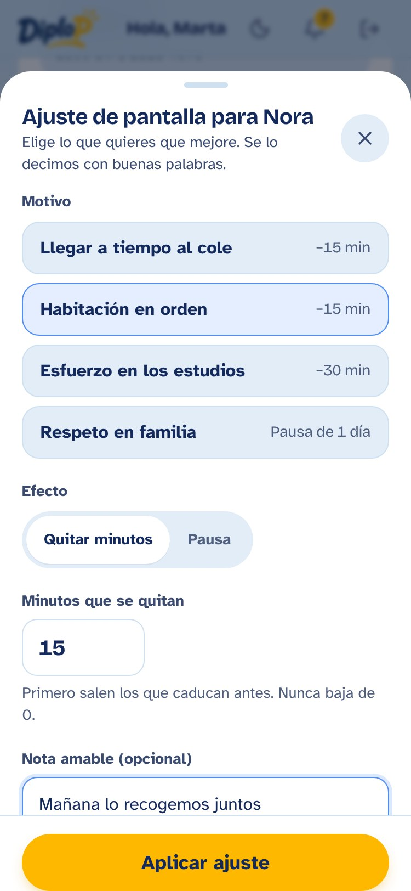
Quitar minutos
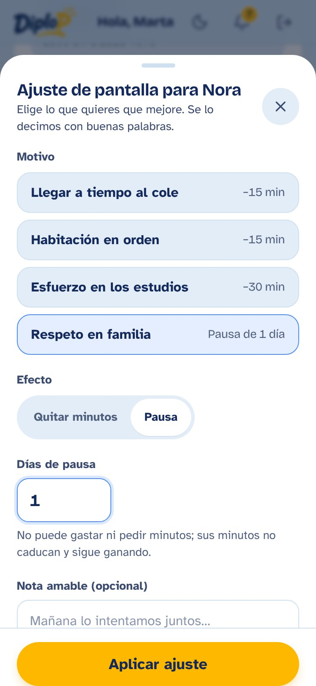
Poner una pausa
Durante una pausa
El hijo ve «Pausa hasta el jueves». No puede gastar ni pedir minutos y sus minutos no caducan mientras dure. Sigue ganando minutos con las tareas. Puedes terminar la pausa antes con Terminar pausa.
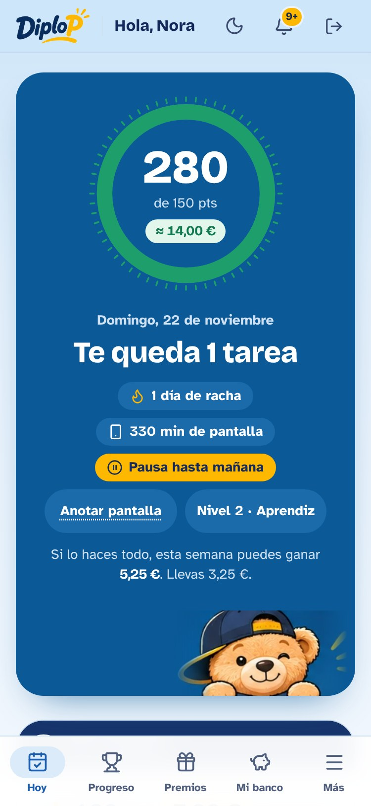
Pausa en el móvil del hijo
Consejo. El hijo también puede anotar los minutos que ha usado. Si lo hace con honestidad, gana 5 puntos una vez al día cuando tú lo confirmas. Y puede pedir minutos o dinero: te llega un aviso para aprobar.
9. Lo que ve el hijo
El hijo entra directo en Hoy. Ve lo que le queda por hacer, cuánto valen sus puntos en euros y sus tres accesos: Mis tareas, Mis puntos y Mis recompensas. Abajo tiene Hoy, Progreso, Premios y Mi banco.
Marcar una tarea
Pulsa el círculo de la tarea. Si necesita validación, queda como «Esperando validación». Si no, los puntos se suman al momento.
Las tareas con hora límite muestran la cuenta atrás. Las de «Cuando haga falta» están aparte y no cuentan como fallo si nadie las hace.
Pantalla «Hoy»Esperando validación
Deshacer y desmarcar
Al marcar «Hecha» salen unos segundos con el botón Deshacer. Después, el hijo puede desmarcar la tarea desde la fila mientras ningún adulto la haya validado. Si la tarea no necesita validación, puede hasta el final del día.
Al desmarcar es como si no la hubiera marcado: se quitan los puntos que ya se hubieran sumado. En tareas compartidas, «Cuando haga falta» y trabajos extra, queda libre otra vez para los demás. No se avisa a los adultos.
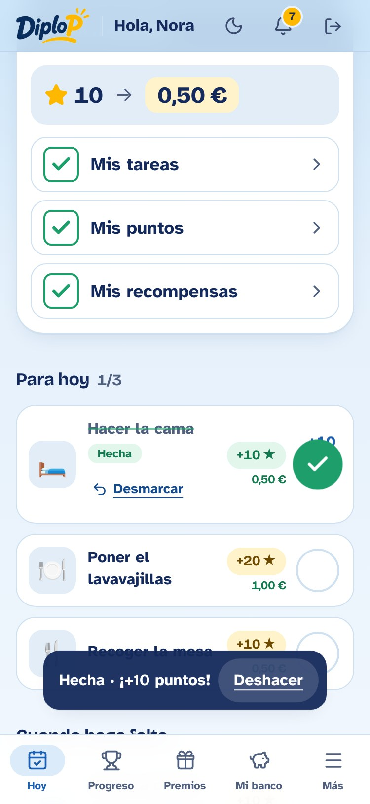
Hecha · Deshacer
Cuando algo no sale bien
Si devolviste o rechazaste una tarea, el hijo ve el resultado y tu motivo en la propia lista. Una tarea devuelta se puede volver a enviar. Una rechazada, no.
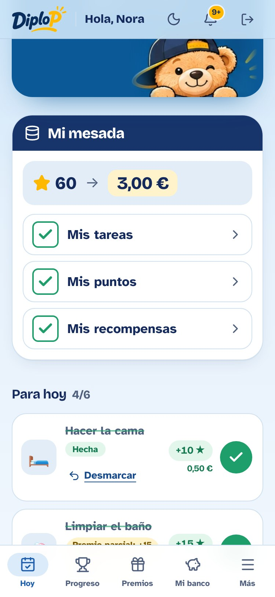
Resultado de la revisión
10. Avisos
Los avisos llegan por tres canales:
En la aplicación (la campana). Siempre.
Correo, para los adultos.
WhatsApp, si la familia lo tiene configurado.
En Más > Avisos los adultos eligen qué avisos recibe cada persona y por qué canal. Hay avisos de tarea nueva, recordatorio diario, tarea a punto de vencer, tarea enviada para validar, aprobada, devuelta, premios, mesada y pagos.
Solo los adultos cambian las preferencias. Los hijos las ven en solo lectura.
Hay horario de silencio: lo que ocurre durante el silencio espera a que termine.
Puedes elegir a qué hora llega el recordatorio diario y cuántos minutos antes de la hora límite se avisa.
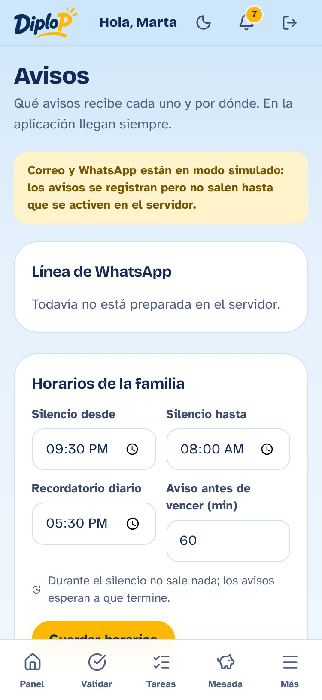
Avisos
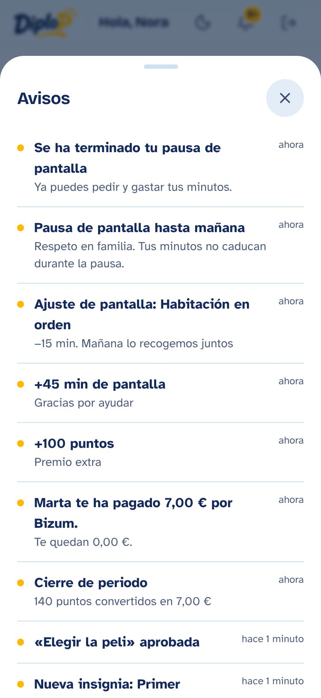
La campana del hijo
Ten en cuenta. WhatsApp solo funciona con un teléfono, el consentimiento registrado y 13 años o más. Por eso conviene poner el año de nacimiento de cada hijo. Si el servidor está en modo simulado, los avisos se registran pero no salen.
11. Dispositivo de confianza (Administración)
La pantalla Administración es para quien gestiona la instalación de DiploP. Muestra el estado del servidor y los envíos. No muestra datos de puntos ni de dinero.
Está protegida con verificación en dos pasos:
Entra en Administración y escribe tu contraseña.
Escanea el código QR con una aplicación de autenticación.
Escribe el código de 6 cifras y pulsa Activar.
Guarda los códigos de recuperación en un lugar seguro.
El código se pide una sola vez en cada dispositivo. Ese móvil u ordenador queda recordado 90 días: en el día a día entras sin código. En un dispositivo nuevo, o pasados los 90 días, se vuelve a pedir. Puedes olvidar un dispositivo desde la misma pantalla.
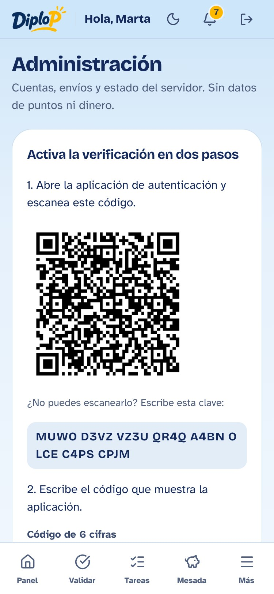
Verificación en dos pasos
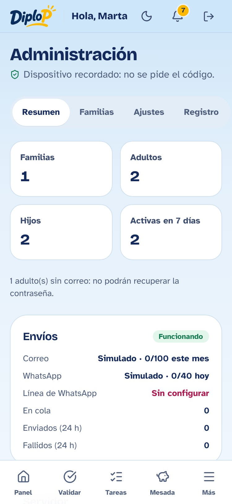
Dispositivo recordado
12. Instalar en el móvil
DiploP se instala desde el navegador. Se queda en la pantalla de inicio con su icono y se abre a pantalla completa.
Móvil
Pasos
iPhone (Safari)
Abre la dirección. Pulsa el botón Compartir (el cuadrado con la flecha). Elige Añadir a pantalla de inicio y pulsa Añadir.
Android (Chrome)
Abre la dirección. Pulsa el menú de los tres puntos. Elige Instalar aplicación (o Añadir a la pantalla de inicio) y confirma.
Hazlo en el móvil de cada persona. Cada una entra con su propio usuario.
Modo oscuro
El botón de la luna, arriba, cambia entre modo claro y oscuro.
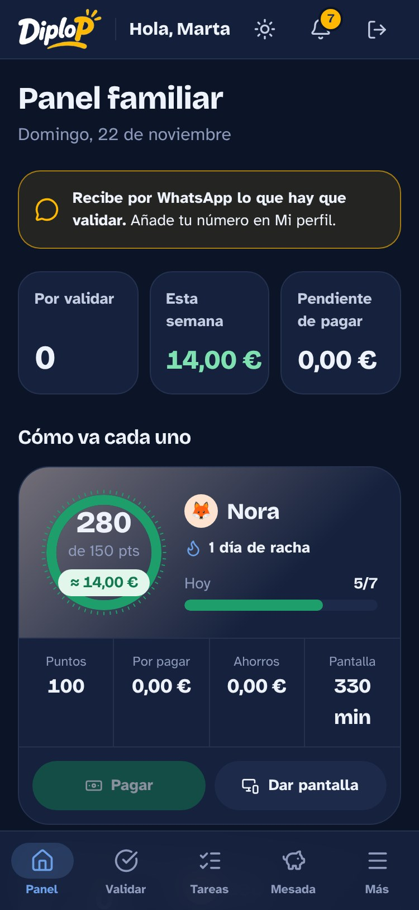
Modo oscuro
Consejo. La aplicación guarda la parte visual en el móvil, pero los saldos siempre vienen del servidor. Necesitas conexión para ver y mover puntos o dinero.
13. Preguntas frecuentes
Mi hijo ha olvidado su PIN.
Un adulto lo cambia en Familia, con el lápiz de su perfil. Al cambiarlo, la cuenta se desbloquea.
He olvidado mi contraseña.
En la pantalla de entrada, pulsa «¿Has olvidado la contraseña?». Si tu cuenta tiene correo, recibes un enlace de un solo uso que vale 30 minutos. Por seguridad, la respuesta es la misma exista o no la cuenta.
Mi hijo se ha equivocado y ha marcado una tarea.
Puede pulsar «Deshacer» o desmarcarla mientras ningún adulto la haya validado.
Mi hijo no ha hecho una tarea a tiempo.
Si tiene hora límite, vale menos pasada la hora. Al terminar el día, la tarea pendiente pasa a «vencida» y el hijo ya no puede marcarla. Un adulto sí puede darla por hecha.
¿Puedo cambiar cuánto vale un punto?
Sí, en Ajustes. El cambio se aplica a los cierres siguientes.
¿Puedo cerrar la semana dos veces?
No. Solo hay un cierre por hijo y periodo.
¿Un hermano ve mis puntos, mi dinero o mis minutos?
No. Cada hijo ve solo lo suyo. La clasificación semanal entre hermanos se puede desactivar.
¿Mis datos están separados de los de otras familias?
Sí. Los datos de cada familia no son visibles ni modificables desde otra.
¿Por qué mi hijo no recibe WhatsApp?
Hace falta teléfono, consentimiento y 13 años o más (año de nacimiento en su perfil). Revísalo en Avisos > Contacto.
¿Qué pasa si sale mal un pago?
El botón de pago no duplica si lo pulsas dos veces. Si pagas más de lo que se debe, la aplicación lo rechaza.
¿Dónde veo todo lo que ha pasado?
En Más > Actividad hay un historial de acciones que no se puede borrar.